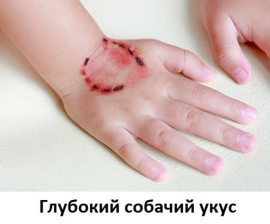
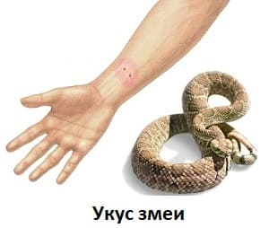
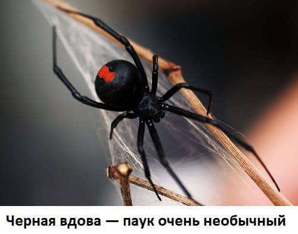
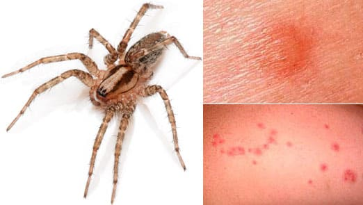

ЧЕЛОВЕЧЕСКИЕ УКУСЫ
Они неизбежны. Оставьте двух малышей поиграть около часа, и, скорее всего, кто-то будет укушен. Хотя большинство таких укусов не опасны, следует предпринять некоторые меры, чтобы дезинфицировать рану и решить, нужен ли врач.
ЛЕЧЕНИЕ
Если кожа не повреждена, ничего делать не надо. Но у детей острые зубы, так что, если появилась кровь, сделайте следующее, чтобы удалить максимум микробов:
КОГДА ВОЛНОВАТЬСЯ
Большинство таких ран не нуждаются во врачебной помощи, но возможны ситуации, когда посещения больницы не избежать:
УКУСЫ ЖИВОТНЫХ
Чаще всего детей кусают домашние животные. Собаки кусаются чаще, чем кошки, но укусы кошек чаще вызывают инфицирование раны. Укусы диких и не привитых домашних животных могут привести к заболеванию бешенством. Бешенством чаще болеют еноты, скунсы, летучие мыши и лисы, чем собаки и кошки. Кролики, белки и другие грызуны редко являются переносчиками бешенства. Если вашего ребенка укусило животное, следуйте этим инструкциям.
ЛЕЧЕНИЕ
Небольшие ранки. Если кожа лишь слегка повреждена (небольшие ссадины без крови) и маловероятно, что животное может быть переносчиком бешенства, лечите как ссадину. Хорошенько промойте с мылом, наложите мазь с антибиотиком, чтобы предупредить инфицирование, и перевяжите.
Глубокие раны. Если животное глубоко прокусило кожу или кожа сильно повреждена и кровоточит, наложите давящую повязку, чтобы остановить кровотечение, и немедленно отправляйтесь к врачу или в отделение неотложной помощи, если рабочий день врача уже закончился.

КОГДА ВОЛНОВАТЬСЯ
Инфекция. Если вы заметили признаки инфицирования: отечность, краснота, усиление боли, отделяемое из раны — немедленно отправляйтесь к врачу. В зависимости от тяжести, источника и места укуса врач, возможно, назначит антибиотик перорально, чтобы предотвратить дальнейшее развитие инфекции. Вероятность заражения выше при укусах лица, рук, ног. Укусы туловища редко инфицируются.
При подозрении на бешенство. Если вы подозреваете, что ребенка укусило животное, больное бешенством, немедленно отправляйтесь к врачу или в отделение неотложной помощи. Врачи решат, нужна ли антирабическая вакцинация. Если укусило домашнее животное, попытайтесь узнать у владельца, привито ли оно от бешенства, и получить соответствующие документы для подтверждения наличия прививки. Если животное дикое или выглядит домашним, но владельца не удается найти, не пытайтесь самостоятельно ловить животное. Свяжитесь со специальной службой, занимающейся отловом животных (можно набрать номер коммунальных служб, если не знаете телефона службы отлова). Животное желательно изолировать, обследовать на бешенство и наблюдать.
СОВЕТ ДОКТОРОВ СИРС: СДЕЛАЙТЕ ПРОТИВОСТОЛБНЯЧНЫЙ УКОЛ Если вашего ребенка прививали от столбняка больше 5 лет назад, то он должен получить укол от столбняка в течение 48 часов после ранения. |
УКУС ЗМЕИ
Большинство людей не сталкиваются со змеями в обычной жизни. Но дети, живущие в сельских районах, имеют такую возможность, так что полезно знать, что делать, если укусила змея. Если вы можете определить вид змеи, не рискуя быть укушенным или пораненным, — сделайте это. Знать, ядовита ли укусившая змея, очень важно.
ЧТО ДЕЛАТЬ
Очистите рану. Промойте рану водой и мылом. Поищите и удалите все комочки грязи или осколки зуба змеи, которые могли отломиться и остаться в ране.
Иммобилизируйте (обездвижьте) конечность. Движения укушенной конечностью способствуют более быстрому распространению яда. Руку можно подвесить в петлю, перекинутую через шею, а при укусе в ногу не позволяйте идти самостоятельно.
Решите вопрос о возможности применения антитоксина. Если змея идентифицирована как ядовитая, то врач вместе с вами решит вопрос о применении антитоксина. Признаки попадания яда — шок, слабость мышц, обморок, затрудненное дыхание, неврологические нарушения. Они могут развиться в течение нескольких часов или позже. Врач поможет вам решить, на сколько времени надо остаться в больнице для наблюдения. |
Можно наложить шину, только не делайте слишком тугую повязку, чтобы не нарушать кровообращение. И не допускайте, чтобы эти мероприятия задержали обращение за медицинской помощью.

Обратитесь за неотложной медицинской помощью. Только если вы совершенно точно знаете, что змея не ядовита, можно не обращаться в отделение неотложной помощи и обработать рану самостоятельно, как любое другое повреждение кожи. Но если вы не уверены или знаете, что змея ядовита, — не откладывая, отправляйтесь в ближайшее отделение неотложной помощи.
Снимите все украшения. Если конечность опухла, украшения надо разрезать.
Сделайте противостолбнячный укол. Руководствуйтесь теми же принципами, что и при укусе животного.
ЧЕГО НЕ ДЕЛАТЬ
Не замораживайте рану. Это может снизить кровоток в окружающих тканях и повышает риск их повреждения.
Не делайте надрезы и не пытайтесь отсосать яд. Надрезы увеличивают риск повреждения и инфицирования тканей, а высасыванием, как доказано, практически невозможно удалить яд.
Не используйте жгут. Снижение кровотока увеличивает риск повреждения тканей.
УКУСЫ ПАУКОВ
Подавляющее большинство пауков безобидны. В Северной Америке водятся только два вида пауков, из-за которых стоит волноваться, — черная вдова и коричневый отшельник.
Укус паука черная вдова. Черная вдова — блестящий черный паук с длинными ногами и красным (иногда оранжевым) рисунком, напоминающим изображение песочных часов, на спинке. Размером она около дюйма (около 2,5 см) вместе с ногами. Укус черной вдовы вызывает немедленную боль и отечность в месте укуса. На протяжении последующих 6—24 часов возможны болезненные судороги мышц. Укус черной вдовы редко смертелен, только для маленьких детей или при многочисленных укусах.

Что делать. Положите лед на область укуса (это поможет задержать распространение яда), затем немедленно вызовите «Скорую помощь» или отправляйтесь в ближайшее отделение неотложной помощи. Не накладывайте жгут, но продолжайте прикладывать лед в течение хотя бы 20 минут. В отделении неотложной помощи проверят показатели жизнедеятельности вашего ребенка и введут антитоксин, если укус сильный. При болезненных судорогах могут быть назначены медикаменты.
Укус паука коричневый отшельник. Этот паук меньше, чем черная вдова, и его труднее опознать. Он около 1/2 дюйма в длину вместе с ногами, имеет темно-коричневую окраску с рисунком, напоминающим скрипку, на головогруди. Коричневый отшельник любит селиться в углах чердака, так что будьте осторожны, копаясь там в коробках. Укус коричневого отшельника вызывает аллергическую реакцию замедленного типа, проявляющуюся болью в месте укуса, а спустя 4—8 часов там образуется пузырь. Затем центр пузыря темнеет (становится сине-черным) и формируется язва или воронковидное углубление. Это углубление является тяжелым последствием укуса, и, если оно достаточно большое, может потребоваться пересадка кожи. Укусы коричневого отшельника редко бывают смертельными.
Что делать. Старательно промойте область укуса водой с мылом, затем вызовите врача.
СОВЕТ ДОКТОРОВ СИРС: УРОК ПРИРОДЫ Вместо того чтобы убивать любого безвредного паука, увиденного дома (например, косоножку), мы стараемся обсудить со своими детьми, как пауки помогают держать в страхе мух и москитов. Мы предпочитаем оставлять таких пауков в покое или аккуратно выносить их на улицу. |
По возможности сохраните паука для идентификации. Если укус сильный, возможно, потребуются хирургическая обработка и дренаж раны.
Укусы других пауков. Большинство паучьих укусов — в том числе и укусы тарантулов — вызывают местные реакции, которые не представляют опасности. Укусы пауков обычно болезненны, место укуса опухает, припухлость держится 1—2 дня, как после ужаления пчелы.
Домашние средства. Прежде всего вымойте место укуса водой с мылом. Затем приложите к нему раствор уксуса. Удобнее всего протирать место укуса ватным тампоном, пропитанным раствором уксуса пополам с водой. Делайте это в течение 10 минут. Если у вас нет уксуса, можно использовать лед. Если боль и припухлость сохраняются, можно нанести на это место крем c бенадрилом.

КОГДА ЗВОНИТЬ ВРАЧУ
ПРОФИЛАКТИКА
УКУСЫ МОСКИТОВ, БЛОХ И ДРУГИХ НАСЕКОМЫХ
Большинство кусачих насекомых в конечном счете безопасны. Обычно нет надобности во врачебной помощи для того, чтобы определить, кто именно укусил, так как лечение одинаковое: уменьшить зуд и предупредить развитие инфекции. Да и врач вряд ли в состоянии определить, какое именно существо пообедало вашим ребенком. Следующие советы помогут уменьшить зуд и предотвратить заражение:
Охладите. Опустите салфетку из махровой ткани в ледяную воду и затем положите ее на место укуса. Также можно протереть кубиком льда отдельные укусы.
Попробуйте лекарства. Один из наших любимых быстродействующих способов — местный анестетик (например, прамоксин) в виде геля, который наносится на место укуса. Он может жечь, если есть крошечная ранка, но в остальных случаях помогает очень хорошо.
Прикройте укус. Успокаивающий лосьон от солнечных ожогов на основе оксида цинка может уменьшить зуд. Не используйте на лице, если есть ранка, так как лосьон высохнет и оксид цинка может остаться в ранке, что повлечет за собой образование рубчика.
ЕСЛИ УЖАЛИЛ СКОРПИОН
Они могут сильно напугать, поскольку яд скорпиона считается классическим образчиком смертельного яда. На самом деле большинство скорпионов в США фактически не ядовиты. Ядовитые виды, как правило, населяют пустыни Юго-Запада США. Если вы можете поймать скорпиона без риска получить еще один укус — сделайте это. Будет полезно определить, ядовитый он или нет.
ЧТО ДЕЛАТЬ
ПЕРВАЯ ПОМОЩЬ
Если скорпион ядовитый или вы не знаете, отправляйтесь в отделение неотложной помощи, попутно выполняя описанные выше мероприятия. Признаки попадания яда скорпиона такие же, как и при других укусах ядовитых существ: шок, затрудненное дыхание, неврологические нарушения. Они могут появиться в течение 2 часов после укуса. Если вы уверены, что скорпион был неядовитый, наблюдайте ребенка дома. Антистолбнячный укол обычно не нужен, так как скорпион жалит неглубоко.
Здоровье ребенка от докторов Сирс / Сирс У. и др.